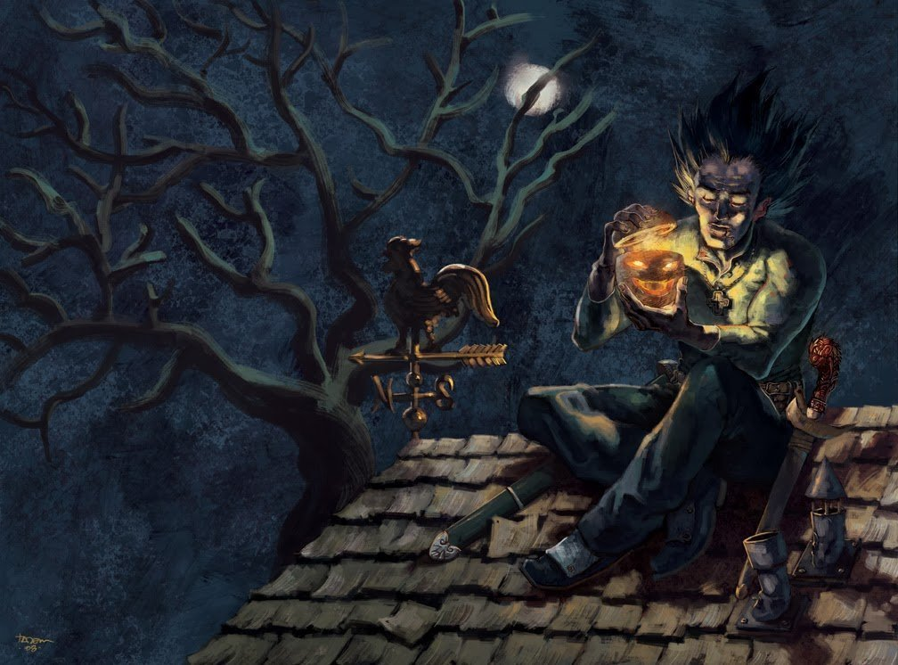

Хеллові́н, або Геллові́н (англ. Halloween, англ. вимова: [ˌhæl.əʊˈiːn]; скорочено від «All Hallows' Eve») — святкується в ніч проти 1 листопада. У ХІХ ст. поширилась думка про язичницькі корені цього свята, зокрема про походження його від кельтського Саваня, однак останні дослідження доводять його католицькі корені. Найгучніше відзначається у США, Канаді, Ірландії та Великій Британії. Хоч у цих країнах Хелловін не є державним святом, та за популярністю поступається лише Різдву. В Україні набуває поширення після здобуття незалежності, разом з пожвавленням у світі процесів американізації наприкінці XX ст. Під час святкування Хелловіну відбувається традиційне випрошування цукерок дітьми, відвідування тематичних костюмованих вечірок, прикрашання оселі та будівель, вирізання ліхтаря з гарбуза, цукрування яблук, розведення вогнищ, виловлювання яблук з відра, розігрування, розповідання моторошних оповідок, перегляд фільмів жахів тощо. Символом свята є ліхтар з гарбуза у вигляді людської голови (Ліхтар Джека).
Походження слова
Уперше назва Хелловіну (Halloween) згадується у 1745 році. Слово походить від англійського Hallowe'en — скорочення виразу All Hallow's Eve — Вечір усіх святих, яке своєю чергою розшифровується як All Hallowed Souls Eve — дослівно: Вечір усіх святих душ. У рівнинній шотландській, вечір — це even, що видозмінилося до e'en або een. Хоча раніше, у давньоанглійській мові трапляється вислів All Hallows (ealra hālgena mæssedæg, день повернення усіх святих), власне «переддень» All Hallows' Eve згадується лиш у 1556.
Символи
Головним символом свята є так званий Ліхтар Джека (англ. Jack-o'-lantern — Джек-Ліхтар). Більшість символів свята мають довгу історію. Наприклад, традиція виготовлення гарбузів-світильників пішла від кельтського звичаю створювати ліхтарі, які допомагають душам знайти шлях у чистилище. У Шотландії символом Хелловіну виступала ріпа, але в Північній Америці її швидко замінив гарбуз, як дешевший та доступніший овоч. Вперше створення гарбузів-світильників в Америці було зафіксовано в 1837; цей ритуал, що проводився під час збору врожаю, не мав ніякого стосунку до Хелловіну аж до другої половини XIX століття.
Популярними є костюми персонажів класичних фільмів жахів, наприклад, Мумії та чудовиська Франкентштейна. У святковому оздобленні будинків велику роль відіграють символи осені, наприклад, сільські лякала. Основними темами Хелловіну є смерть, зло, окультизм та монстри. Традиційними кольорами є чорний та помаранчевий.
Ліхтар Джека у фольклорі
Згідно з ірландською легендою, Скупий Джек якось запросив Диявола випити з ним. Джек не схотів платити за свій напій, тому переконав Диявола перетворитися на монету, щоб нею розплатитися. Щойно Диявол зробив це, Джек сховав монету в кишеню, де лежав срібний хрестик, що не давав Дияволу набути початкового вигляду. Зрештою Джек звільнив Диявола за умови, що він не турбуватиме Джека цілий рік, а якщо Джек помре, він не забере його душу. Наступного року Джек знову зустрівся з Дияволом і обманом змусив його залізти на дерево, щоб зірвати плід. Поки Диявол сидів на дереві, Джек вирізав на корі хрест, щоб Диявол не зміг злізти. Джек погодився відпустити Диявола лише за обіцянку не турбувати його ще десять років. Незабаром Джек помер, але Бог не дозволив йому піти до раю через вчинені за життя гріхи. Диявол же, пам'ятаючи минулі зустрічі, не дозволив Джеку потрапити в пекло. Він відправив Джека в темну ніч, давши тільки палаючу вуглинку, щоб освітлювати шлях. Джек поклав вуглинку у вирізану ріпу і відтоді блукає по Землі.
Як і інші свята, Хелловін має свої відомі пісні та тематичну музику. Широко відома пісня «Monster Mash» поп-музиканта Боббі Пікетта стала, на думку ряду музичних критиків, своєрідним гімном Хелловіну
Іншою дуже популярною піснею є композиція «This Is Halloween», написана Денні Ельфманом. Вона увійшла до саундтреку анімаційного фільму «Жах перед Різдвом» і неодноразово була переспівана різними не лише американськими, але і японськими виконавцями
Історія свята
На зламі епох Античності та Середньовіччя 13 травня католицька церква відзначала свято Всіх святих (православні відзначають це свято в першу неділю після Зіслання Святого Духа). Однак у VIII ст. папа Григорій ІІІ освятив у Римі каплицю в базиліці св. Петра на честь Всіх Святих саме 1 листопада, і переніс на день освячення цієї каплиці також святкування цього свята в Римі. У наступному, IX столітті, папа Григорій IV постановив, що 1-е листопада буде днем Всіх Святих у цілій Церкві. У цій традиції свято потрапило й до Ірландії, а не навпаки, попри поширену думку, що воно нібито трансформувалося з передхристиянського язичницького шабашу. А день перед празником, як і перед кожним великим святом, проводилося передпразденство (вігілія, навечір'я). Звідси назва «All Hallows Even», «Вечір усіх святих», скорочено «Hallowe'en». Натомість під кінець Х століття, у Франції, під впливом Клюнійського абатства, 2 листопада починають відзначати День Всіх Померлих вірних. З Франції цей день помину померлих поширився по всьому католицькому світу.
Опис кельтського язичницького свята Савань, яке іноді вважають прообразом Хелловіну, з'являється в староірландській літературі починаючи з X століття. Згідно з Оксфордським словником фольклору, Савань був святом одночасно для всіх народів Британських островів та міцно асоціювався зі смертю та надприродним. Водночас немає жодних доказів того, що в язичницькі часи свято мало якесь особливе значення, крім сільськогосподарського та сезонного. Древні кельти, які жили на території сучасної Великої Британії, ділили рік на дві частини — світлу і темну (літо і зиму). Коли темна частина змінювала світлу (наприкінці жовтня), у кельтів починалися урочисті святкування.
Традиційно вважається, що сприйняття Саваня як темного язичницького свята, пов'язаного з мертвими, зобов'язане своєю появою християнським ченцям X—XI століть, які писали про нього через приблизно два сторіччя після затвердження Дня всіх святих та приблизно через чотириста років після прийняття Ірландією християнства. Водночас, уже в VIII столітті День усіх святих починає поступово заміщати Савань; завдяки взаємопроникненню гельських традицій та католицьких обрядів, починають формуватися перші зачатки майбутнього Хелловіну.
З цього моменту починається спадкоємний розвиток двох свят. Як і Савань, Хелловін традиційно відзначається в ніч на 1 листопада. В Шотландії та Ірландії Савань носив назву Oidhche Samhna і Oíche Samhna (шотландською та ірландською відповідно), і сучасні носії гельських мов і досі позначають Хелловін словами Oíche/Oidhche Samhna, зокрема таку назву збережено у Вікіпедії ірландською мовою. Досі на півночі Шотландії та Ірландії прийнято проводити ритуали для заспокоєння мертвих та розповідати вночі 31 жовтня легенди про предків[
Оскільки 1 листопада церква молиться до святих у небі, 2 листопада поминає душі в чистилищі, то в середовищі деяких ірландських селян почалися роздуми над ситуацією «нещасних грішників» ще в одному «місці» — у пеклі. Прокляті, на думку простих ірландських католиків, мають бути ще більш нещасними, якщо тут на землі про них геть забули. Тому зародився звичай стукати в каструлі та сковорідки напередодні «Всіх Святих», тобто на «Hallowe'en», щоб прокляті в пеклі знали: про них теж пам'ятають! Таким чином, в Ірландії з'явився «День Всіх Померлих» — 31 жовтня, а не лише «померлих вірних», який відмічали 2 листопада. До церковного календаря цей день, звичайно, не потрапив.
Проте нинішній вигляд свята Хелловін, з усіма перебираннями та іншими звичаями, з'явився пізніше і не має ірландського коріння. Радше звичай почав зароджуватися у Франції приблизно в XIV або в XV столітті, у часи страшних катаклізмів (один з них — пандемія чуми «Чорна смерть», забрала життя майже третини європейського населення). Це активно сприяло замисленню про життя після смерті. Різні театралізовані вистави мали у своєму репертуарі постановки про смерть, про чистилище і про пекло, щоб нагадувати кожному про його смертність та про марноту і швидкоплинність життя. Тодішні вистави мали такі назви як «Танець Смерті» чи «Танець Жаху». Нагадування про плинність земного життя та рівність усіх перед смертю часто залишалася на стінах цвинтарів: диявол на ланцюгу веде до могили чи то короля, чи то папу, чи то знатну даму, чи то монаха, чи то селянина. Часто відбувалися театралізовані вистави «танців смерті» в сам день Всіх Святих, і там виступали актори, одягнені в одяг різних соціальних груп та станів, від короля до бідняка. Закономірно, у виставі також брали участь такі персонажі, як «Диявол» чи «Смерть». Деколи такі вистави відбувалися не лише в містах, і з часом стали досить розповсюдженими і традиційними. Отож, у Франції ці вистави відбувалися в День Всіх Святих, тобто 1 листопада. Натомість в Ірландії, в переддень Всіх Святих, на «Hallowe'en», тобто 31 жовтня, таких вистав і відповідно перевдягання не було.
Уперше перевдягання і театралізовані виступи саме 31 жовтня зустрічаються у XVIII столітті в англійських колоніях Північної Америки, де французькі та ірландські католики споріднювалися у шлюбах та поєднували свої традиції. Таким чином, гібрид ірландського акцентування на пеклі в поєднанні з французьким маскарадом створив досить специфічне та колоритне свято.
В Америці досить швидко перевдягання на Хелловін перестало бути ціллю, а стало засобом назбирати побільше солодощів від сусідів. У цьому брали участь зазвичай діти, які ходили по домівках, стукали до дверей і говорили: «Trick or treat», «Відкупись, або зачарую» (дослівно: «зроблю фокус або пригощай»), тобто «погрожуючи» наробити всіляких «магічних неприємностей» мешканцям дому, якщо ті не дадуть чогось «хелловінським колядникам». Цей досить дивний звичай, ніяк не пов'язаний з «днем померлих», став своєрідним американським додатком до Хелловіну. Походив він з Англії, де з настанням англіканства в XVI столітті, почалися переслідування католиків. На початку XVII століття сталася змова деяких католиків і запланували вбити короля Якова І та весь Парламент вибухом. Проте порох у Парламенті виявили, а організатора, Гая Фокса, знайшли і повісили 5 листопада 1605 року. Цей день, «День Гая Фокса» (Guy Fawkes’ Day), став народним святом в Англії і залишився ним дотепер. Тоді підпиті гуляки в масках ходили вже в глуху ніч проти 5 листопада по домах католиків і просили пива чи солодощів для продовження святкування. При цьому часто виговорювали «Trick or treat», «пригощай або буде фокус». Традиція святкувати цей день переїхала до Америки разом з англійськими переселенцями. Та після Американської революції в другій половині XVIII століття вона була занехаяна, разом з іншими англійськими національними святами. Проте ходіння по домівках з промовлянням «trick or treat» стало вже досить популярним і його перенесли на іншу ніч, а саме на католицький франко-ірландський «Hallowe'en» 31 жовтня. Таким чином до католиків долучилися теж протестанти і свято Хелловін стало загальнонаціональним.
Північноамериканські альманахи кінця XVIII та початку XIX століття не подають ніяких відомостей про святкування Хелловіну там. Але у ХІХ ст. свято отримує бурхливе поширення і перестає обмежуватися лише емігрантськими громадами. У суспільстві воно починає сприйматися як «понуре» і «моторошне», хоч і веселе, а ніяк не релігійно-поминальне. Саме тому пуритани Нової Англії його не схвалювали.
У ХІХ ст. були популярні листівки-запрошення, на яких для більшого ефекту «моторошності» почали поміщати у різних колажах відьом. Під кінець XIX століття недоінформовані фольклористи, не знаючи звідки взялася відьма, та й взагалі інші «страшні» персонажі, а лише чули, що це принесли ірландці, впровадили до свята «jack-o’-lantern», «блукаючий вогник» (тобто ліхтар). Вони були переконані, що Хелловін має кельтське та поганське походження, тому належить додати якісь «призабуті», на їх думку, елементи з культури друїдів. Вибрали ріпу та ліхтар, який був частиною древніх кельтських свят врожаю. Гарбуз усталився як поширений елемент Хелловіну в XX столітті, тому що його легше робити порожнистим та поміщати всередині нього ліхтар.
До середини XX століття Хелловін святкувався всіма американцями від узбережжя до узбережжя, незалежно від походження, суспільного чи статків.